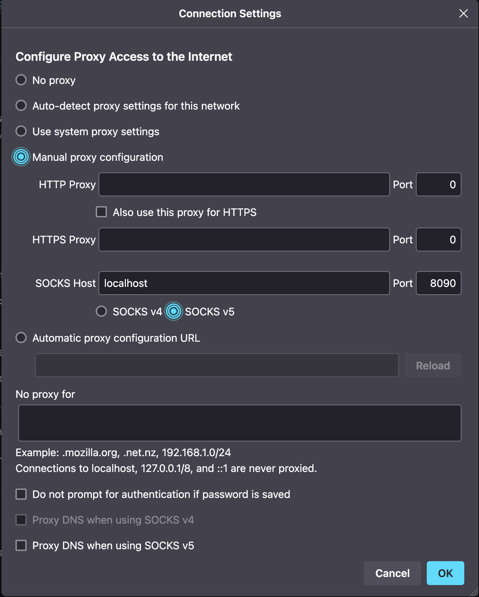

BMC Management
HPE iLO
Connect to iLO GUI through Tunnel
Method 1: SOCKS Proxy
-
SSH into intermediary node:
ssh -D 8090 root@INTERMEDIARY_NODE -
Configure the external system Firefox browser to use a SOCKS 5 proxy on
localhoston port8090. This can be found underSettings → Network Settings. -
Navigate to the
https://<iLO_IP>;in your Firefox browser.
Method 2: SSH Tunnel
Create an SSH tunnel to forward port 443 traffic to the BMC:
-
Create the tunnel using local SSH port forwarding. Replace
LOCAL_PORTwith an unused local port.ssh -L LOCAL_PORT:BMC_IP:443 INTERMEDIARY_NODE -
Connect to the iLO web GUI interface of the BMC at
https://localhost:LOCAL_PORT.Example➜ ~ ssh -L 8089:172.24.254.53:443 cdslmo4
Here, we’re forwarding traffic on port 8089 of our local laptop to 172.24.254.53:443,
using cdslmo4 as our intermediary node.
Then, in a browser on your laptop, navigate to https://localhost:8089
ilorest
ilorest user guide: https://servermanagementportal.ext.hpe.com/docs/redfishclients/ilorest-userguide/usage/
Login with ilorest:
[root@cdslmo4-client01 ~]# ilorest login https://172.24.254.53 -u root -p <password>
iLOrest : RESTful Interface Tool version 4.0.0.0
Copyright (c) 2014-2022 Hewlett Packard Enterprise Development LP
----------------------------------------------------------------------------------------------------------------------------------------------------------------------------
Discovering data...DoneUpdating Firmware
Firmware packages can be found in the HPE Support Center: https://support.hpe.com/connect/s/softwaredetails?language=en_US&collectionId=MTX-2dc80c4ae4b943fa&tab=releaseNotes
Or in the LMO web server: http://lmo-pxe.hpc.amslabs.hpecorp.net/firmware/ilo/5/
Using ilorest from a host/server:
ilorest flashfwpkg <file_name.fwpkg> --url <iLO5_IP_Address> -u <iLO5_username> -p <iLO5_password>[root@cdslmo4-client01 ~]# ilorest flashfwpkg ilo5_310.fwpkg --url https://172.24.254.53 -u root -p <password>
iLOrest : RESTful Interface Tool version 4.0.0.0
Copyright (c) 2014-2022 Hewlett Packard Enterprise Development LP
----------------------------------------------------------------------------------------------------------------------------------------------------------------------------
Discovering data...Done
Uploading firmware: ilo5_310.bin
Successfully checked 'ilo5_310.bin'.
Uploading component ilo5_310.bin.
The operation completed successfully.
Component ilo5_310.bin uploaded successfully.
Waiting for iLO UpdateService to finish processing the component
00 hour(s) 02 minute(s) 44 second(s)
Firmware has successfully been flashed.
iLO will reboot to complete flashing. Session will be terminated.Set iLO to DHCP Mode via SSH
Check if the DHCP Endpoint is enabled, in the case below, it’s not:
</>hpiLO-> show /map1/dhcpendpt1
status=0
status_tag=COMMAND COMPLETED
Mon Feb 3 17:10:17 2025
/map1/dhcpendpt1
Targets
Properties
EnabledState=no
OtherTypeDescription=DHCP
Verbs
cd version exit show setSet the EnabledState=yes:
</>hpiLO-> set /map1/dhcpendpt1 EnabledState=yes
status=0
status_tag=COMMAND COMPLETED
Mon Feb 3 17:11:30 2025
Network settings change applied.
Settings change applied, iLO will now be reset.
Logged Out: It may take several minutes before you can log back in.
CLI session stopped
Received disconnect from 10.254.0.201 port 22:11: Client Disconnect
Disconnected from 10.254.0.201 port 22After the iLO resets, make sure the new IP Address Source is "DHCP Address":
cdslmo402:~ # ipmitool lan print
Set in Progress : Set Complete
Auth Type Support : NONE MD5 PASSWORD
Auth Type Enable : Callback : MD5 PASSWORD
: User : MD5 PASSWORD
: Operator : MD5 PASSWORD
: Admin : MD5 PASSWORD
: OEM :
IP Address Source : DHCP Address
IP Address : 172.24.254.55
Subnet Mask : 255.255.0.0
MAC Address : b4:7a:f1:55:27:4a
SNMP Community String :
BMC ARP Control : ARP Responses Enabled, Gratuitous ARP Disabled
Default Gateway IP : 172.24.255.254
802.1q VLAN ID : Disabled
802.1q VLAN Priority : 0
RMCP+ Cipher Suites : 0,1,2,3
Cipher Suite Priv Max : XuuaXXXXXXXXXXX
: X=Cipher Suite Unused
: c=CALLBACK
: u=USER
: o=OPERATOR
: a=ADMIN
: O=OEM
Bad Password Threshold : Not AvailableUpdating License
If you have an expired license:
Apply key under Administration > Licensing > Activation Key > Install, or
ssh root@<iLO address> set /map1 license=/<key>Find BMC Information from Host
Use ipmitool lan print from the host OS
[root@mawenzi-06 ~]# ipmitool lan print
Set in Progress : Set Complete
Auth Type Support : NONE MD5 PASSWORD
Auth Type Enable : Callback : MD5 PASSWORD
: User : MD5 PASSWORD
: Operator : MD5 PASSWORD
: Admin : MD5 PASSWORD
: OEM :
IP Address Source : DHCP Address
IP Address : 10.214.129.30
Subnet Mask : 255.255.248.0
MAC Address : 94:40:c9:47:b1:d7
SNMP Community String :
BMC ARP Control : ARP Responses Enabled, Gratuitous ARP Disabled
Default Gateway IP : 10.214.128.1
802.1q VLAN ID : Disabled
802.1q VLAN Priority : 0
RMCP+ Cipher Suites : 0,1,2,3
Cipher Suite Priv Max : XuuaXXXXXXXXXXX
: X=Cipher Suite Unused
: c=CALLBACK
: u=USER
: o=OPERATOR
: a=ADMIN
: O=OEM
Bad Password Threshold : Not AvailableiLO Redfish API
CURLing Redfish API for the iLO (iLO 5 in this example) looks like:
curl --insecure -u user:password --location https://<iLO>/redfish/v1/<rest_of_redfish_url>mawenzi-06:~ # curl --silent --insecure -u root:<pass> --location https://mawenzi-05-ipmi.hpc.amslabs.hpecorp.net/redfish/v1/Managers/1/VirtualMedia/2/ | jq
{
"@odata.context": "/redfish/v1/$metadata#VirtualMedia.VirtualMedia",
"@odata.etag": "W/\"14700DD6\"",
"@odata.id": "/redfish/v1/Managers/1/VirtualMedia/2/",
"@odata.type": "#VirtualMedia.v1_2_0.VirtualMedia",
"Id": "2",
"Actions": {
"#VirtualMedia.EjectMedia": {
"target": "/redfish/v1/Managers/1/VirtualMedia/2/Actions/VirtualMedia.EjectMedia/"
},
"#VirtualMedia.InsertMedia": {
"target": "/redfish/v1/Managers/1/VirtualMedia/2/Actions/VirtualMedia.InsertMedia/"
}
},
"ConnectedVia": "NotConnected",
"Description": "Virtual Removable Media",
"Image": "",
"Inserted": false,
"MediaTypes": [
"CD",
"DVD"
],
"Name": "VirtualMedia",
"Oem": {
"Hpe": {
"@odata.context": "/redfish/v1/$metadata#HpeiLOVirtualMedia.HpeiLOVirtualMedia",
"@odata.type": "#HpeiLOVirtualMedia.v2_2_0.HpeiLOVirtualMedia",
"Actions": {
"#HpeiLOVirtualMedia.EjectVirtualMedia": {
"target": "/redfish/v1/Managers/1/VirtualMedia/2/Actions/Oem/Hpe/HpeiLOVirtualMedia.EjectVirtualMedia/"
},
"#HpeiLOVirtualMedia.InsertVirtualMedia": {
"target": "/redfish/v1/Managers/1/VirtualMedia/2/Actions/Oem/Hpe/HpeiLOVirtualMedia.InsertVirtualMedia/"
}
},
"BootOnNextServerReset": false
}
},
"WriteProtected": true
}Insert virtual media in CD/DVD ROM:
mawenzi-06:~ # curl -i -X POST --insecure -u root:<password> --header "Content-Type: application/json" --data-raw '{"Image":"http://sp06.hpc.amslabs.hpecorp.net:8080/cm-admin-install-1.12-rocky94-x86_64.iso"}' --location https://mawenzi-05-ipmi.hpc.amslabs.hpecorp.net/redfish/v1/Managers/1/VirtualMedia/2/Actions/VirtualMedia.InsertMedia
HTTP/1.1 200 OK
Cache-Control: no-cache
Content-type: application/json; charset=utf-8
Date: Tue, 07 Jan 2025 22:36:23 GMT
ETag: W/"02C2D1BB"
OData-Version: 4.0
Transfer-Encoding: chunked
X-Content-Type-Options: nosniff
X-Frame-Options: sameorigin
X-XSS-Protection: 1; mode=block
{"error":{"code":"iLO.0.10.ExtendedInfo","message":"See @Message.ExtendedInfo for more information.","@Message.ExtendedInfo":[{"MessageId":"Base.1.4.Success"}]}}
# Show it was inserted:
mawenzi-06:~ # curl --silent -X GET --insecure -u root:<password> --location https://mawenzi-05-ipmi.hpc.amslabs.hpecorp.net/redfish/v1/Managers/1/VirtualMedia/2/ | jq
{
"@odata.context": "/redfish/v1/$metadata#VirtualMedia.VirtualMedia",
"@odata.etag": "W/\"79D484A5\"",
"@odata.id": "/redfish/v1/Managers/1/VirtualMedia/2/",
"@odata.type": "#VirtualMedia.v1_2_0.VirtualMedia",
"Id": "2",
"Actions": {
"#VirtualMedia.EjectMedia": {
"target": "/redfish/v1/Managers/1/VirtualMedia/2/Actions/VirtualMedia.EjectMedia/"
},
"#VirtualMedia.InsertMedia": {
"target": "/redfish/v1/Managers/1/VirtualMedia/2/Actions/VirtualMedia.InsertMedia/"
}
},
"ConnectedVia": "URI",
"Description": "Virtual Removable Media",
"Image": "http://sp06.hpc.amslabs.hpecorp.net:8080/cm-admin-install-1.12-rocky94-x86_64.iso",
"ImageName": "cm-admin-install-1.12-rocky94-x86_64.iso",
"Inserted": true,
"MediaTypes": [
"CD",
"DVD"
],
"Name": "VirtualMedia",
"Oem": {
"Hpe": {
"@odata.context": "/redfish/v1/$metadata#HpeiLOVirtualMedia.HpeiLOVirtualMedia",
"@odata.type": "#HpeiLOVirtualMedia.v2_2_0.HpeiLOVirtualMedia",
"Actions": {
"#HpeiLOVirtualMedia.EjectVirtualMedia": {
"target": "/redfish/v1/Managers/1/VirtualMedia/2/Actions/Oem/Hpe/HpeiLOVirtualMedia.EjectVirtualMedia/"
},
"#HpeiLOVirtualMedia.InsertVirtualMedia": {
"target": "/redfish/v1/Managers/1/VirtualMedia/2/Actions/Oem/Hpe/HpeiLOVirtualMedia.InsertVirtualMedia/"
}
},
"BootOnNextServerReset": false
}
},
"WriteProtected": true
}Set 'BootOnNextServerReset' to True for VirtualMedia:
curl -i -X PATCH --insecure -u root:<password> --header "Content-Type: application/json" --data-raw '{"Oem":{"Hpe":{"BootOnNextServerReset": true}}}' --location https://mawenzi-05-ipmi.hpc.amslabs.hpecorp.net/redfish/v1/Managers/1/VirtualMedia/2/
HTTP/1.1 200 OK
Cache-Control: no-cache
Content-type: application/json; charset=utf-8
Date: Tue, 07 Jan 2025 22:41:18 GMT
ETag: W/"02C2D1BB"
OData-Version: 4.0
Transfer-Encoding: chunked
X-Content-Type-Options: nosniff
X-Frame-Options: sameorigin
X-XSS-Protection: 1; mode=block
{"error":{"code":"iLO.0.10.ExtendedInfo","message":"See @Message.ExtendedInfo for more information.","@Message.ExtendedInfo":[{"MessageId":"Base.1.4.Success"}]}}Eject virtual media:
mawenzi-06:~ # curl -i -X POST --header "Content-Type: application/json" --data-raw '{}' --insecure -u root:<password> --location https://mawenzi-05-ipmi.hpc.amslabs.hpecorp.net/redfish/v1/Managers/1/VirtualMedia/2/Actions/VirtualMedia.EjectMedia/
HTTP/1.1 200 OK
Cache-Control: no-cache
Content-type: application/json; charset=utf-8
Date: Tue, 07 Jan 2025 22:34:53 GMT
ETag: W/"02C2D1BB"
OData-Version: 4.0
Transfer-Encoding: chunked
X-Content-Type-Options: nosniff
X-Frame-Options: sameorigin
X-XSS-Protection: 1; mode=block
{"error":{"code":"iLO.0.10.ExtendedInfo","message":"See @Message.ExtendedInfo for more information.","@Message.ExtendedInfo":[{"MessageId":"Base.1.4.Success"}]}}ipmitool Guide
Prerequisites
Install ipmitool on a Linux server somewhere on the same network as the BMC you’re trying to control
zypper install ipmitoolSerial over LAN Console
-
Activate a Serial Over LAN (SOL) console:
ipmitool -H <bmc_ip_address> -v -I lanplus -U <user> -P <password> sol activate
Chassis Commands
Chassis Commands:
status, power, policy, restart_cause
poh, identify, selftest,
bootdev, bootparam, bootmbox-
Show chassis status
mawenzi-06:~ # ipmitool -H 10.214.130.217 -v -I lanplus -U root -P <password> chassis status Loading IANA PEN Registry... Using best available cipher suite 3 Running Get VSO Capabilities my_addr 0x20, transit 0, target 0x20 Invalid completion code received: Invalid command Discovered IPMB address 0x0 System Power : on Power Overload : false Power Interlock : inactive Main Power Fault : false Power Control Fault : false Power Restore Policy : previous Last Power Event : Chassis Intrusion : inactive Front-Panel Lockout : inactive Drive Fault : false Cooling/Fan Fault : false Front Panel Control : none -
Set boot device to virtual CD:
ipmitool -H <bmc_ip_address> -v -I lanplus -U <user> -P <password> chassis bootdev cdrom -
Chassis power commands:
ipmitool -H <bmc_ip_address> -v -I lanplus -U <user> -P <password> chassis power off ipmitool -H <bmc_ip_address> -v -I lanplus -U <user> -P <password> chassis power on ipmitool -H <bmc_ip_address> -v -I lanplus -U <user> -P <password> chassis power cycle # Shut down host gracefully ipmitool -H <bmc_ip_address> -v -I lanplus -U <user> -P <password> chassis power soft